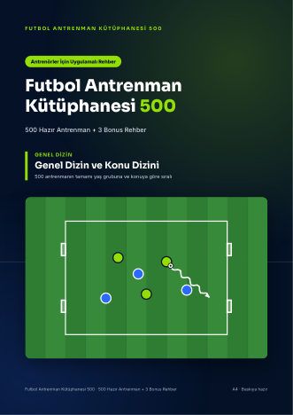
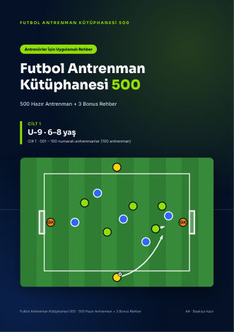
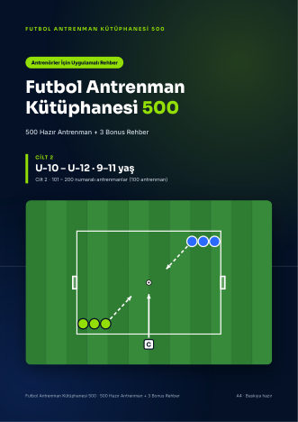
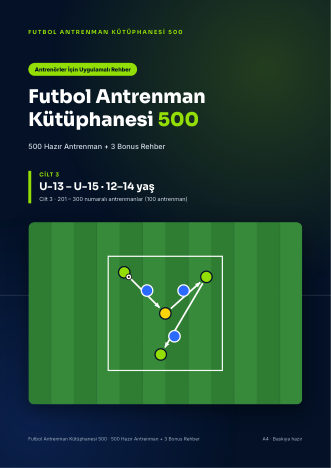
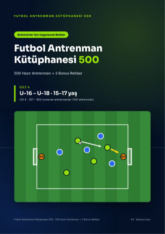
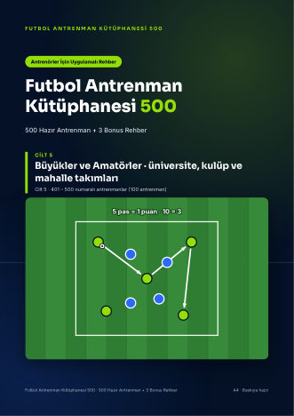

- Çalıştırdığınız yaş grubunu ve çalışmak istediğiniz konuyu belirlemek için «Genel Dizin» ile başlayın.
- İlgili cildi indirin, ihtiyacınız olan sayfaları yazdırın ve sahaya çıkın.
- Antrenman numaralarını haftalık planlama şablonuna yazarak antrenman haftanızı baştan sona hazırlayın.
Mobil cihazda: indirdikten sonra dosyayı «Dosyalar» uygulamasından veya herhangi bir PDF okuyucudan açın. Dilediğiniz zaman tekrar indirebilmek için bu sayfayı yer imlerinize ekleyin.
Ana ürün · Futbol Antrenman Kütüphanesi 500 (5 cilt + Genel Dizin)

Genel Dizin ve Konu Dizini
500 antrenmanın tamamı yaş grubuna ve konuya göre sıralı. Buradan başlayın.
İndir
Cilt 1 · U-9 (6–8 yaş)
Antrenman 001 – 100 · 8’li futbol
İndir
Cilt 2 · U-10 – U-12 (9–11 yaş)
Antrenman 101 – 200 · 8’li futbol
İndir
Cilt 3 · U-13 – U-15 (12–14 yaş)
Antrenman 201 – 300 · 11’li futbol
İndir
Cilt 4 · U-16 – U-18 (15–17 yaş)
Antrenman 301 – 400 · 11’li futbol
İndir
Cilt 5 · Büyükler ve Amatörler
Antrenman 401 – 500 · 11’li futbol
İndir3 Bonus Rehber
Bonus 1 · 100 Futbol Sürat Antrenmanı
Reaksiyon, ivmelenme, yön değiştirme ve topla sürat · 100 alıştırma
İndirBonus 2 · Topla 50 Kondisyon Antrenmanı
Dayanıklılık, kuvvet, core ve çeviklik · 50 alıştırma
İndirBonus 3 · 30 Haftalık Planlama Şablonu (yazdırılabilir)
5 yaş grubu × 2 sezon dönemi × haftada 2–4 gün · elle doldurmak için
İndirBonus 3 · 30 Haftalık Planlama Şablonu (düzenlenebilir)
Tarayıcıda açın, doğrudan yazın ve yazdırın. Yazdıklarınız tarayıcınızda kalır.
AçSonraki Adım
- Antrenman gün sayınıza ve sezon dönemine uyan bir haftalık şablon seçin.
- Genel Dizin’den bu haftanın konusuna uyan 2 veya 3 antrenman seçin ve numaralarını şablona yazın.
- Ana bölümden önce bir sürat ya da kondisyon alıştırması ekleyin ve antrenmana başlayın.